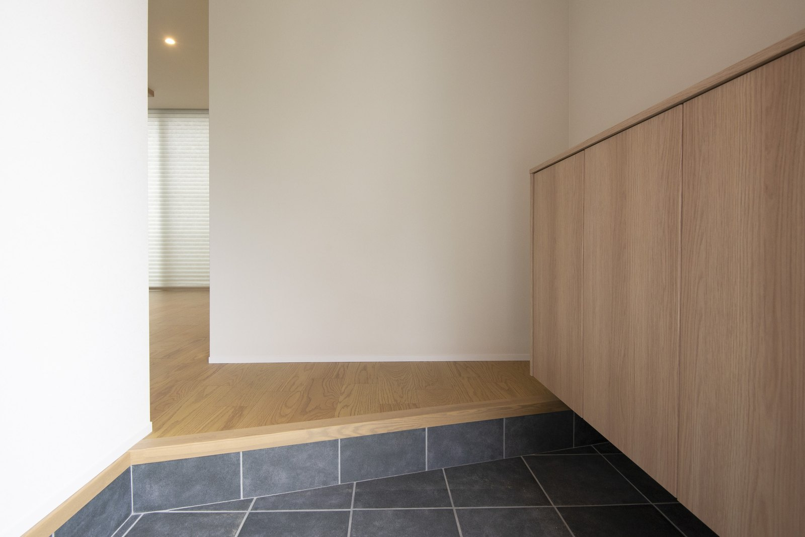
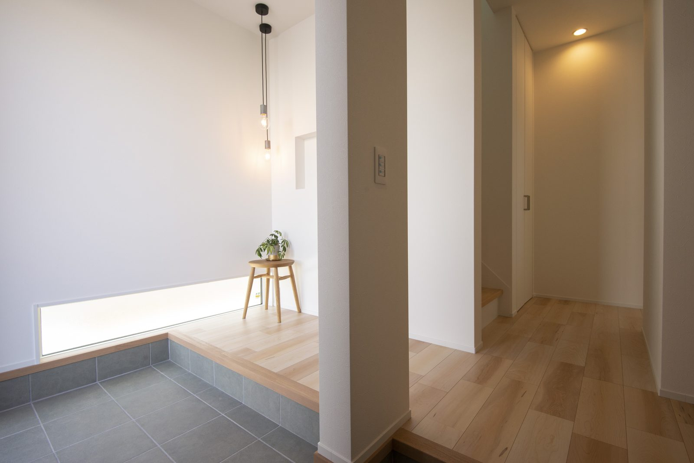

寒い日に帰宅して、上着を脱ぎ、買い物袋を置き、子どもの支度を手伝う。玄関を考えるときは、靴が何足入るかに加えて、この一連の動きを想像してみてください。奈良でこれから間取りを決める方に、冬の暮らしから考える方法をご紹介します。

写真では、土間に面して収納を設けています。収納量を見るときは、扉を開ける場所と、家族が靴を脱いで上がる場所が重ならないかも確認しましょう。
上着は、どこで脱ぐか
玄関の近くで脱ぐのか、リビングへ持っていくのか。家族の習慣によって、使いやすい収納の場所は変わります。玄関に掛けるなら、上着を掛けた状態で扉が閉まるか、通路をふさがないかも見ます。
家族全員の冬物を常に置く必要があるとは限りません。毎日使う分と季節外の分を分けて考えると、玄関を必要以上に広げずに計画しやすくなります。
濡れたものは、しまう前に置く
雨の日の傘やレインコートを、帰宅してすぐ収納する想定になっていないでしょうか。乾かす場所と、乾いた後に戻す場所を分けて考えます。床や壁の仕上げも、濡れたものを扱う場所として相談してください。
屋外に置く場合は風雨の入り方や通行の邪魔にならないか、室内に置く場合は水滴の受け方や手入れのしやすさを確認します。収納扉を付けるだけで、湿気の問題が解決するとは考えないようにしましょう。
帰宅したら、どこで何をする？
荷物を置く場所から、手洗いまで
買い物袋と通勤かばんを持ったままでは、靴や上着を扱いにくくなります。一時的に荷物を置ける場所があるかを、図面で確かめてください。ベンチを置くなら、座る人と通る人が重なる場面も想像します。
玄関近くの手洗いを希望する場合も、位置だけでなく、荷物を置き、上着を扱い、手を洗う順番を考えます。掃除やタオルの交換まで続けられる場所かどうかも、家族で話しておきたい点です。

この写真は、玄関土間から廊下へつながる様子です。帰宅した家族が立ち止まる場所と、奥へ進む人の道を重ねて考えると、必要な余裕を相談しやすくなります。
今の玄関で、帰宅の順番を試す
設計中なら、今の住まいで帰宅したときの動きを書いてみましょう。家族が同時に帰る日と、一人ずつ帰る日では、必要な余裕も変わります。困った場面を写真やメモで残すと、打合せで具体的に伝えられます。
広い玄関や大きな収納が必ず必要というわけではありません。毎日使う物に戻す場所があり、通る場所が残ること。その条件を、ご家族の帰宅の仕方に合わせて考えていきましょう。
関連記事：寒くない家を考えるときの確認点
よくある質問
玄関に家族全員の上着を収納するべきですか？
毎日の習慣と収納量によります。よく着る分だけ置く方法も含め、通路や扉との関係を考えます。
濡れた傘を収納の中へ入れてもよいですか？
乾かす場所と保管する場所を分けて計画し、水滴や手入れの方法を担当者に相談してください。

奈良の工務店シバサンホームで、
土地さがし・資金計画・打合せの窓口をしています。
モットーはスピード・誠実さ・楽しさ。